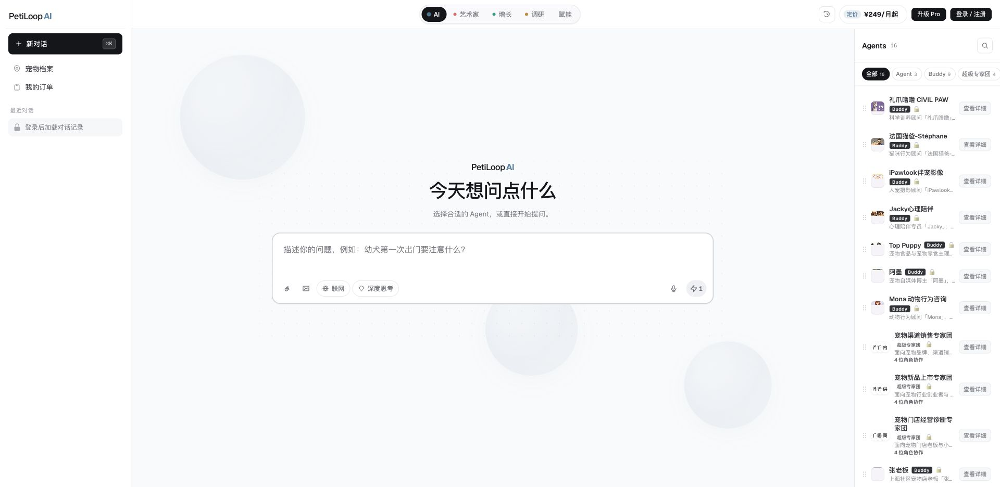
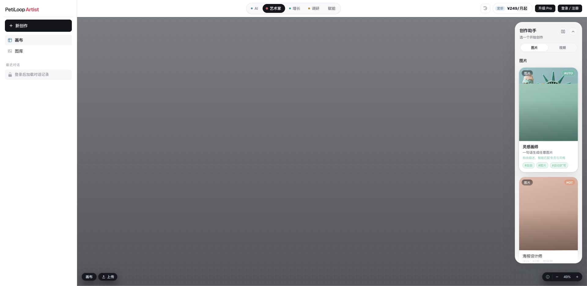
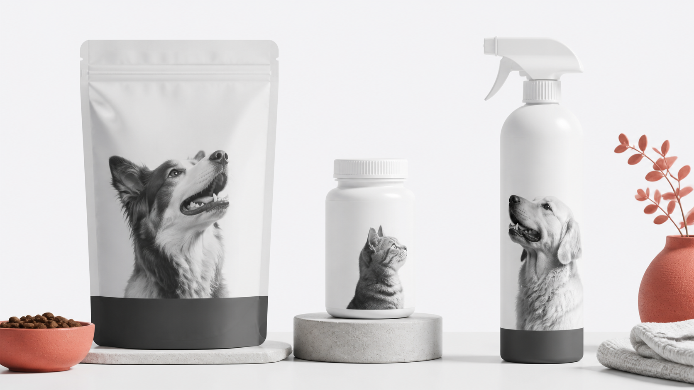

PetiLoop · 宠物行业 AI 整体解决方案
懂宠物的 AI，
把下一步做出来
把经营判断、内容增长、视觉产出与用户研究放进同一张工作台。让几个人，甚至一个人也能推进一整支团队的工作。
PetiLoop · Brand Promise02 / 20
“
我们相信
一个人，
也该拥有一支
懂行的团队
佩乐窝把宠物行业经验变成日常可用的工作能力：不用研究提示词，不用在多套工具之间来回搬运。
01 · Why Now03 / 20
01
缺人
一个人要同时当老板、运营、文案与设计。
02
缺专业能力
懂宠物，却未必懂增长、视觉和经营表达。
03
工具太碎
素材、判断和成稿散在不同工具里，反复搬运。
04
通用 AI 不懂行
答案看似完整，却很难直接用于宠物业务。
01 · For Whom04 / 20
为一人公司与小团队而做
你的规模可以很小，目标不必变小

宠物门店经营诊断、获客复购、开业传播与本地内容
宠物品牌商品图、详情页、种草内容与新品首发
内容创作者爆款拆解、选题共创、配图与账号复盘
医院与机构专业科普、用户洞察、品牌信任与客户教育
02 · Who We Are05 / 20
PetiLoop 佩乐窝
把“懂行的经验”，
变成每一天都能用的能力
面向宠物行业经营者的 AI 工作台。五条产品线已经上线，并围绕同一份业务材料协同工作。
使命让宠物行业的每一个经营者，都能用上懂行的 AI。
愿景成为宠物行业最值得信赖的 AI 工作台。
做事标准懂行、可用、真诚；不做花哨概念，只做能继续执行的下一步。
02 · Product Map06 / 20
01佩乐窝 AI
PetiLoop AI把门店、渠道或经营问题说清楚，和合适的行业专员一起拆出下一步。
02佩乐窝 艺术家
Artist把宠物商品和门店素材做成能发布的海报、商品图与短视频画面。
03佩乐窝 增长
Viral拆爆款、找选题、写草稿，再用账号数据判断下一篇怎么做。
04佩乐窝 调研
Research先听清用户与专家怎么说，再把发现整理成团队能讨论的报告。
05佩乐窝 赋能
Forge陪企业从一段真实流程开始，把适合自己的 AI 工作方式落下来。
03 · PetiLoop AI07 / 20
经营问题，不再一个人想
把问题说清楚，下一步就能继续
经营、健康、门店与内容专员会围绕同一个问题协作，不只回答“是什么”，更把行动拆到今天能做。
01围绕真实宠物业务语境给出判断
02需要时邀请不同专员一起讨论
03把结论收口为可继续执行的步骤

03 · One Brief, One Round08 / 20
场景示例 · 门店推广洗护卡
一次说明，带走一套能落地的行动材料
门店主的一句话
“下个月想推洗护卡，帮我把方案、内容和店员话术一起理清。”
不需要先学会怎么写提示词
02内容草稿小红书笔记、社群短文与门店海报用同一套表达。
03店员问答把顾客常见疑问提前整理成可直接使用的话术。
04执行清单明确先做什么、需要准备什么、如何判断下一轮。
04 · PetiLoop Artist09 / 20

宠物视觉，不止是“生成一张图”
从商品素材，到能发布的成片
把商品图、标题、参考风格与平台尺寸放在同一次任务里，让初版更接近真正可用。
01商品上新：主图、场景图与详情页素材
02门店传播：活动海报、探店画面与短视频素材
03品牌起步：宠物形象、包装方向与视觉套系

Artist · 商品视觉
一套素材，形成一组统一的商品表达
商品主体、场景氛围与平台规格在同一轮里对齐，减少“漂亮但不能发”的返工。

Artist · Campaign
海报、门店场景与生活方式内容，共用一套品牌语气
同一场活动可以自然延展成不同尺寸与不同触点的传播素材。
05 · PetiLoop Viral12 / 20

内容增长
爆款拆完，下一篇直接开始写
把同类宠物内容、账号后台数据和过去笔记放在一起，先找到问题，再把有效结构带进下一篇。
01看清选题、标题、封面与内容结构为什么有效
02把拆解结论带进选题清单与图文草稿
03用账号数据复盘下一阶段，而不是只看单篇表现
05 · Content Loop13 / 20

选题会后，直接进入制作参考、判断、草稿与视觉不再分散在四处；团队围绕同一份材料继续。
06 · PetiLoop Research14 / 20
用户研究
先听清用户怎么说，再决定做什么
围绕新品、服务或内容主题，整理目标用户与专家视角，把模糊想法变成团队可讨论的研究结论。
01澄清真正要验证的问题
02组织用户访谈与专家圆桌视角
03输出可分享、可继续决策的研究报告

07 · PetiLoop Forge15 / 20
08 · One Connected Journey16 / 20
Research先听用户
验证需求、场景与表达边界。
Artist做成视觉
商品图、海报与平台尺寸一起产出。
08 · Real Business Scenarios17 / 20
先解决一件事，再把方法留下来
从你今天最需要推进的工作开始
宠物内容品牌新品首发内容包
调研结论、首轮海报与小红书笔记使用同一套消费者语言。
从调研开始 →
宠物门店新项目开业传播
探店脚本、海报和店员常见问答一起产出，拿到就能改。
从视觉开始 →
宠物自媒体多账号周更
爆文拆解、选题与配图串起来，选题会后直接进入制作。
从增长开始 →
中小宠物品牌渠道复盘与下一步
把后台数据和渠道问题放在一起，围绕同一份诊断做决定。
从经营开始 →
09 · The Proof18 / 20
使用者反复提到的三个词
价值，应该在工作里直接被感受到
能发
产出接近真实使用
不是停在想法或示例，而是更快拿到可以继续修改与发布的初版。
一轮
减少重复来回
标题、尺寸、语气与素材在同一次任务里说明，减少跨工具返工。
同一份
团队围绕共同材料
调研、内容、视觉与经营判断不再各说各话，下一步更容易达成一致。
09 · User Voices19 / 20
来自正在做宠物业务的使用者
不是多一套工具，是少一轮来回
以前做一次小红书选题，要在群里来回找参考。现在先拆同类爆文，再把结构带进成稿，下午就能给设计排版。
宠物用品内容运营
负责选题、笔记与账号复盘
海报最怕漂亮但不能发。现在商品图、标题和尺寸一轮放进去，先拿到能发的初版，再按品牌语气细调。
独立宠物品牌主理人
一个人管产品、渠道与内容
开新服务前，我们先听一轮顾客怎么说，再让专家团看门店问题。内部讨论终于围着同一份材料走。
三店连锁负责人
负责宠物门店运营与新项目
今天先推进一步
把你现在的宠物业务问题，先问清楚
从门店经营、商品视觉、内容增长或用户研究里的任意一件事开始。
打开 PetiLoop 官网